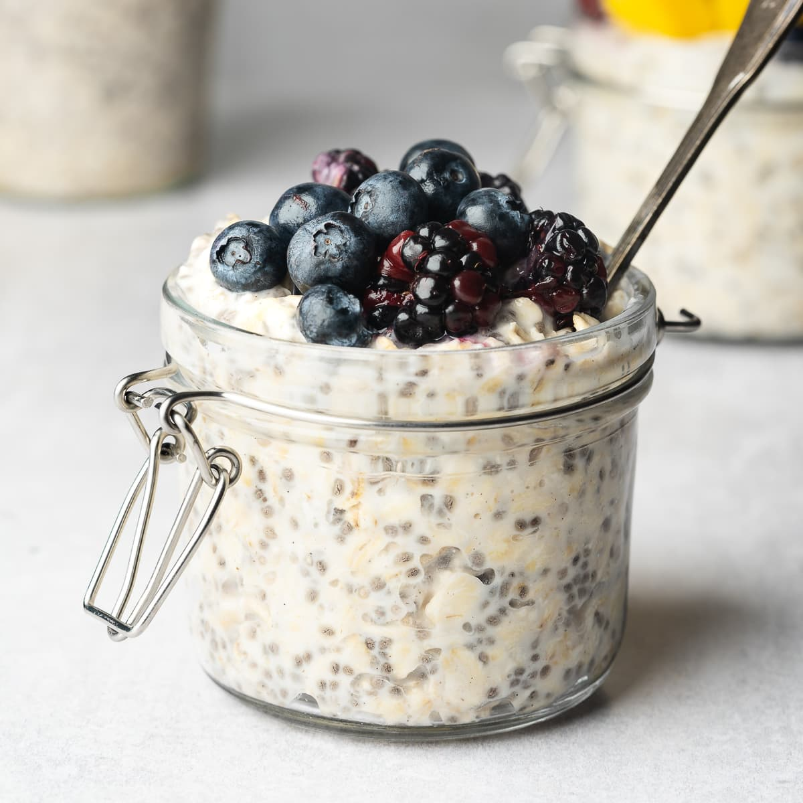

Oats Breakfast

Healthy protein rich breakfast using oats.
Ingredients
- 1 cup Oats
- 1 scoop protein powder
- 30 grams pistachios
- 20 grams honey
- milk
- blueberries
- apple (optional)
Steps
- Prepare the base: In a jar or bowl, add 1 cup of oats. Pour in enough milk to fully cover the oats (about 1–1.5 cups, depending on how thick you want it).
- Mix in protein: Stir in 1 scoop of protein powder until fully dissolved with the oats and milk. This will enrich the oats with flavor and nutrition.
- Add sweetness: Drizzle 20 grams of honey into the mixture and stir well so the sweetness is evenly spread.
- Incorporate nuts: Roughly chop or crush 30 grams of pistachios and mix them into the oats for crunch and healthy fats.
- Refrigerate overnight: Cover the jar or bowl and refrigerate for at least 6–8 hours (or overnight) so the oats absorb the liquid and soften.
- Add fresh toppings: In the morning, stir the oats and top with fresh blueberries. If desired, dice an apple and add it for extra crunch and fiber.
- Serve chilled: Enjoy straight from the fridge, or add a splash of extra milk if you prefer a looser consistency.
Home